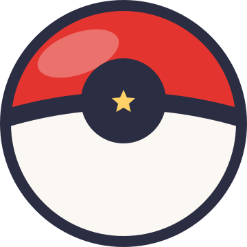

Pokemon GO 活動曆
載入中…
訂閱行事曆
訂閱
同步到 iPhone 行事曆
✕
⭐ 我的追蹤
依類型訂閱（自動更新）
點一下 → iPhone 會跳出「訂閱行事曆」→ 按「訂閱」。之後新活動會自動出現。
小提醒
iPhone 抓取訂閱的頻率由系統決定，可到「設定 → App → 行事曆 → 行事曆帳號 → 取得新資料」調整。
訂閱的行事曆會出現在行事曆 App 的「已訂閱」區，可個別隱藏或刪除。
活動時間異動時會自動更新，不會重複出現。